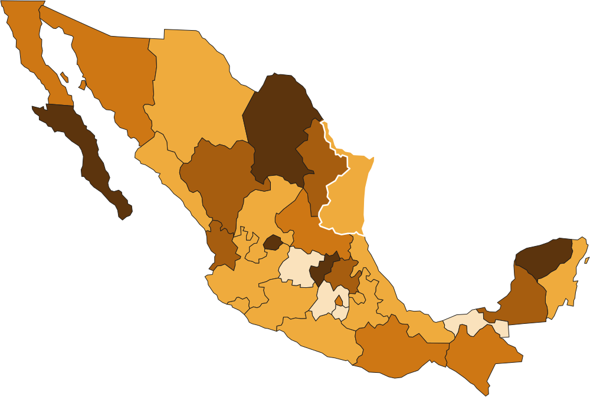

México · INEGI ENVIPE · 2011–2026
Crime & Insecurity in Mexico
Victimization and perceptions of safety across 16 survey editions — for all 32 states (overall, by gender and by age), 339 municipalities and 33 urban areas, weighted to the adult population.
32states
16editions
723variables
Open dashboard →